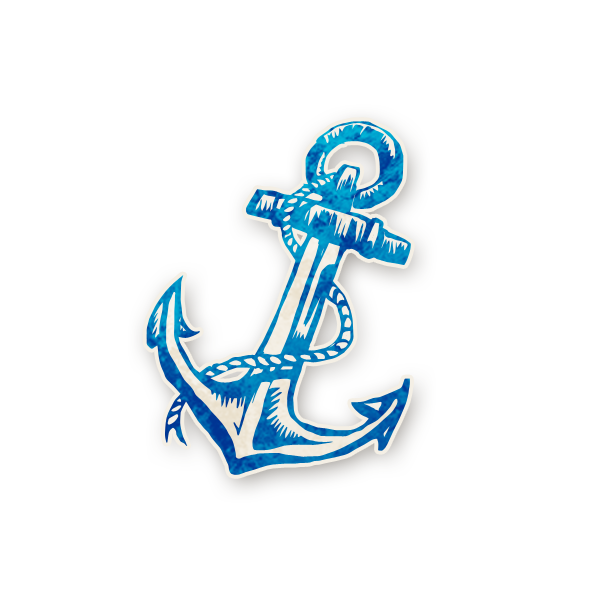

Sailor (กะลาสี)

คุณไม่มีวันตาย และในแต่ละคืน เลือกผู้เล่นที่ยังมีชีวิต 1 คน (เลือกตัวเองได้) คุณและผู้เล่นที่คุณเลือก จะมีคนใดคนหนึ่ง เมา (Drunk) ในคืนนั้นและเช้าวันถัดไป
- แต่ละคืน Sailor จะได้เลือก ว่า ใคร(อาจ)จะกลายเป็น คนเมา (Drunk)
- หากเลือกตัวเอง, ความสามารถ “ไม่มีวันตาย” จะหายไป จนกว่าจะสร่างเมา
- โดยปกติ หาก Sailor เลือก ชาวเมือง (Townsfolk), Storyteller จะให้ ชาวเมืองคนนั้น กลายเป็น คนเมา
- แต่ถ้า Sailor เลือก คนนอก (Outsider) หรือ ฝ่ายร้าย (Evil), Storyteller มักจะให้ ตัว Sailor เอง กลายเป็น คนเมา
ตัวอย่าง
- Sailor เลือก Exorcist และ Storyteller ตัดสินใจให้ Exorcist กลายเป็นคนเมา จากนั้น Sailor ถูกโจมตีโดยปีศาจ จะไม่ตาย หลังจากนั้น ตอนเช้า, Sailor ถูกโหวตประหารชีวิต ก็จะไม่ตาย
- ในตอนกลางวัน, Gossip ปล่อยข่าวลือ ซึ่งเป็นความจริง, คืนนั้น Sailor ใช้ความสามารถของตัวเอง แต่ กลายเป็นคนเมาเอง จากนั้น ความสามารถของ Gossip ทำงาน และ Storyteller เลือกให้ Sailor ตาย
- Sailor เลือก Mastermind (ลูกสมุน), Storyteller เลือกให้ Sailor กลายเป็นคนเมา วันรุ่งขึ้น Sailor โหวตตัวเองเพื่อต้องการพิสูจน์ตัวเอง และตาย
Tips & Tricks
- เลือกตัวละครที่คุณต้องการทำให้กลายเป็นคนเมา เช่น คนที่น่าสงสัย หรือ ชาวเมืองที่มีความสามารถที่มีประโยชน์น้อย เช่น Grandmother หรือ Fool
- ถ้าคุณต้องการอยู่รอดให้นานที่สุด คุณจะต้องเลือกชาวเมือง โดยเฉพาะถ้าเลือกชาวเมืองที่มีความสามารถสูงๆ, Storyteller ก็มักจะให้ชาวเมืองคนนั้น กลายเป็นคนเมา
- คุณอาจบอกกับผู้เล่นคนนั้นๆ ว่า คุณเลือกเขาในตอนกลางคืน เพื่อให้เขารู้ว่า อาจจะกลายเป็นคนเมาได้
- สื่อสารกับกลุ่ม และหาให้ได้ว่าใครคือตัวละครใด คุณจะสามารถตัดสินใจเลือกใช้ความสามารถ ได้อย่างมีประสิทธิภาพที่สุด
- คุณสามารถยืนยันว่าตัวเองคือ Sailor ได้ โดยการโหวตประหารตัวเอง
Bluffing
- อย่าลืมว่า คุณสามารถตายได้ เพราะคุณไม่ใช่ Sailor จริงๆ
- Devil’s Advocate มีความสามารถปกป้องคุณจากการโหวตประหารได้ คุณอาจใช้วิธีนี้ จัดฉาก เพื่อให้คนดีเชื่อใจได้
- พยายามโน้มน้าว คนดี ที่มีความสามารถสูงๆ หรือมีข้อมูล ว่า คุณ(ในฐานะ Sailor)เลือกพวกเขา และทำให้เขา กลายเป็นคนเมา ซึ่งใช้ความสามารถไม่ได้ หรือได้ข้อมูลมาผิดๆ
- หากฝ่ายร้ายคนอื่น ให้ข้อมูลที่ขัดแย้ง เกิดความน่าสงสัย, คุณสามารถแก้ต่างให้ได้ โดยบอกกับกลุ่มว่า คุณเลือกเขา และทำให้เขาเมา